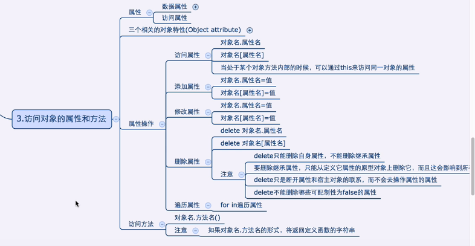

<!DOCTYPE html>
<html lang="en">
<head>
    <meta charset="UTF-8">
    <title>Obj's attribute</title>
</head>
<script type="text/javascript" src="../../DebugUtils.js"></script>
<body>
<script>
    p('');
    sep();

    var person = {
        username: 'king',
        age: 12,
        salary: 1234.56,
        addr: '北京',
        sex: '男'
    };
    enhance('查询属性');
    p('用户名: ' + person.username);
    p('性别: ', person.sex);
    p('薪水: ' + person['salary']);
    enhance('用方括号可以动态改变想要查询的属性，用. 就不行');
    var attrKey = 'username';
    p(person.attrKey); // undefined
    p(person[attrKey]); // king

    sep();

    enhance('在对象方法内部时，可用this来访问对象的属性');
    function PersonInfo(name, age, sex) {
        this.name = name;
        this.age = age;
        this.sex = sex;
    }
    var p1 = new PersonInfo('king', 34, '男');
    p(p1.age);

    enhance('用.来添加属性');
    var p2 = {};
    p2.username = 'king';
    p2.age = 14;
    p(p2.username);
    enhance('用[]来添加属性');
    p2['addr'] = '北京';
    p(p2.addr);
    enhance('修改属性');
    p2.username = 'modified name';
    p(p2.username);
    enhance('通过delete删除属性');
    enhance('delete只能删除自身的属性，不能删除继承的属性');
    delete p2.username;
    p(p2.username);
    enhance('通过for/in遍历属性');
    for (var personKey in person) {
        p(personKey + ": " + person[personKey]);
    }
    enhance('若对象中有方法');
    person.sayHi = function () {
        p('在对象的函数内部，用this.key打印对象的属性{ this.username: ' + this.username + '}');
        return '我是person对象中的方法';
    }
    p(person.sayHi());
    enhance('打印方法字符串');
    p(person.sayHi);
</script>
</body>
</html>